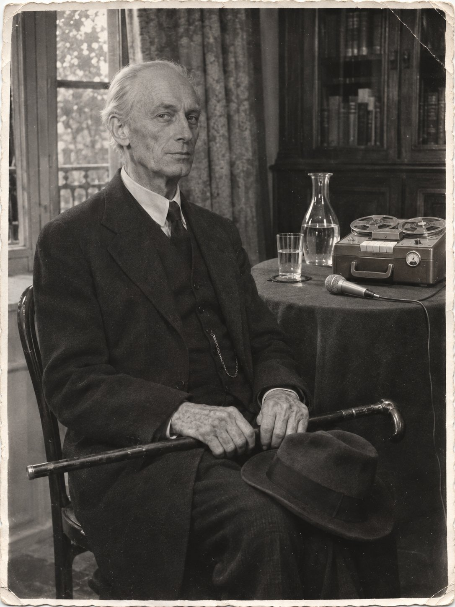

Катушка первая

«Трость.
Безъ фамиліи. 1928, XII. Пирей — Буэносъ-Айресъ, тѣмъ же рейсомъ, что я. Каюта двухмѣстная, 2-й классъ. Паспортъ С.Х.С.
Паспортъ мнѣ — его. Заплаченъ перстнемъ.
Не спрашиваетъ. Не открываетъ. Пьетъ воду.
Не трогать.
2/1».Карточка из картотеки дона Аурелио Ловато. Первый ящик, первая карточка, перед разделителем «1929». Чернила, старая орфография.
Звучит: «Naranjo en flor», Вирхилио Экспосито (музыка) и Омеро Экспосито (слова), 1944.
Признаюсь, я впервые говорю в машину.
Сегодня вторник, семнадцатое мая шестидесятого года. Сейчас без двадцати восемь утра. Я сижу у себя на Эсмеральде, за тем же столом, за которым вы сидели вчера. За окном туман. Башни у Ретиро не видно, и часов на ней тоже, поэтому время я называю по своим.
Я начал с числа и часа, потому что так начинается донесение. Полвека я писал донесения и читал чужие. Слова «я» в них не было. Писали «наблюдаемый вышел из дома в 11 ч. 40 м.», «известное лицо на встречу не явилось». Я сам учил так писать. Кто пишет «я», тот скоро начинает думать, что он важнее того, за кем ходит. Теперь мне придётся говорить «я» в каждой второй фразе. Это труднее, чем я думал.
Машину я купил в субботу на Флориде, в магазине, где продают приёмники и холодильники. Она немецкая, «Грундиг». Серый ящик с ручкой, как у чемодана. Сверху две катушки, каждая величиной с чайное блюдце. Под ними ряд клавиш. Сбоку круглый стеклянный глазок, в нём горит зелёный веер: когда я говорю, он сходится, когда молчу, расходится. Продавец сказал, что по глазку видно, не слишком ли громко говорят. Микрофон на шнуре. Я поставил его на стол против себя, на испанский словарь, чтобы он стоял выше графина.
Плёнки на одной катушке хватает на сорок пять минут, если брать тонкую. Я взял тонкую, шесть катушек. Ящик принёс в субботу вечером мальчик из магазина. Лифт работал, и всё равно мальчик отдыхал на площадке: машина весит, как хороший чемодан. Коробку я поставил в спальне к шкафу и до сегодняшнего утра её не трогал. У меня, кажется, привычка не открывать то, что мне приносят.
---
Первым эта машина записала чужое радио.
В семь часов во дворе открыли то же окно, что вчера, и опять заиграли. Я поднёс микрофон к форточке и нажал клавишу. Потом перемотал и послушал. Играл бандонеон, гармонь с кнопками, которую придумали в Германии, а научились на ней плакать здесь. Пел мужчина. Диктор назвал песню: «Naranjo en flor», «Апельсиновое дерево в цвету». Она о женщине, которая ушла, и о том, в каком порядке человек всему учится. Уходить он учится последним.
За песней на плёнке было слышно меня. Я дышал. Я не знал, что дышу так громко.
Потом я поставил катушку на начало и стал говорить. Продавец уверял, что новая запись стирает старую. Признаюсь, я поверил ему на слово. Это не в моих правилах.
---
Вы спросите, зачем старику машина.
Затем, что меня, по-видимому, отравили. Я пока не знаю кто. Я знаю чем.
Начну с ног.
В ночь со среды на четверг меня рвало. Я подумал на рыбу. В четверг утром я поехал на Чакариту, как езжу каждый четверг. У ангела, где вы меня видели, я стоял долго, и ступни у меня стали чужие. Я чувствовал, что стою, и не чувствовал, на чём. В пятницу в Тортони я встал из-за стола и на долю секунды взялся за спинку стула. Вы это заметили. Я видел в зеркале, что вы заметили.
С субботы я не могу зашнуровать левый ботинок. Шнурки я заправляю внутрь. По ночам подошвы жжёт, как будто стоишь босиком на горячем песке, а если тронуть их рукой, они руки не чувствуют. Во рту сухо. Я пью и не напиваюсь.
Вчера вы видели, как я тёр голень. Я сказал вам: колено. Колено здесь ни при чём. Колено у меня болит с девятнадцатого года, и я знаю, как оно болит.
В пятьдесят третьем году английская газета, которую я тогда читал, печатала из Сиднея судебные отчёты. Там пожилая дама много лет угощала родню чаем, и родня умирала. Газета перечислила признаки подробно, как в аптечном справочнике. Сначала живот. Через день-два ноги: жжение, онемение, хуже всего подошвы. Сухость во рту. Недели через две-три выпадают волосы. Яд назывался таллий. У него нет ни запаха, ни вкуса. В Сиднее его продавали в лавках на углу, в пузырьках, против крыс.
Я прочёл и запомнил. Я всю жизнь запоминаю то, что пригодится кому-нибудь другому.
Если считать от среды, сегодня шестой день. Волосы, если я прав, начнут выходить к двадцать пятому, к самому юбилею. Я узнаю об этом по гребню. Умирают от этого через несколько дней или через несколько недель, смотря сколько дали и сколько дадут ещё.
Я просил у вас тишины до конца месяца. Признаюсь, я просил и для себя.
К врачу я не пойду. Врач напишет бумагу. Бумагу прочтут. Тот, кто это сделал, узнает, что я знаю, раньше, чем я узнаю, кто он.
Как это сделали, я пока не знаю. Ем я мало и почти всегда у себя. Пью воду.
Сейчас на плёнке слышно графин. Я налил себе.
---
Теперь о вчерашнем вечере. Вы его помните, но помните со своего места.
Когда князь уехал, вы вернулись в комнату и не сели. Вы встали у окна, где стояли до этого, и смотрели вниз, пока он не вышел из подъезда. Я смотрел на вас в стекле. Это вы тоже знаете.
— Он ответил мне по-английски, — сказали вы.
— Вы ему тоже ответили по-английски. В субботу, на лестнице.
Вы помолчали. Потом спросили, что он прочёл.
— Свою карточку.
— Что в ней?
— Его жизнь. Он взял её с собой. Она его.
— Он сказал «второй раз». По-русски. Кого он хоронит второй раз?
Я сказал, что не знаю. Это была неправда. Первая за вечер, если не считать того, что я при вас говорил князю по-грузински.
Вы спросили, о чём мы говорили по-грузински. Я ответил: князь спросил дорогу на кладбище. Это была правда, и вы поверили ей не больше, чем неправде.
— Ночью?
— Ночью.
— И вы дали.
— Дал.
— Он пойдёт туда один.
— Он отказался от провожатых. Вы слышали.
Вы взяли шляпу с полки и пошли к двери. Я сказал вам в спину, что за вами с пятницы ходят двое. Один живёт за стеной вашего номера и платит вперёд. Другой читает газету в чёрном «шевроле». Если вы пойдёте за князем, они пойдут за вами, и на Чакарите вас будет четверо, а у дона Аурелио тесно. Вы остановились у двери и положили шляпу обратно, на ту же полку.
Вы послушались меня в первый раз. Признаюсь, мне это не понравилось. Я подумал, что вы решили что-то сами и мне не скажете.
Мы сидели до половины первого. Говорили мало. Вы спросили про ногу, и я сказал: колено. Потом я спросил, кто учил вас читать по-русски.
— Никто, — сказали вы.
— В бóведе вы прочли «Аргентина» по слогам. Так читают дети, которых учили дома, за столом, по пальцу.
— Меня никто не учил.
Вы ответили быстро, второй раз быстрее первого. Так отвечают, когда ответ приготовлен давно. Я сам когда-то учил людей отвечать медленнее.
Вы ушли в половине первого. Я смотрел из окна, как вы выходите. На углу вы остановились у аптеки и посмотрели на улицу в её стекло, сначала в одну сторону, потом в другую, и только тогда пошли к площади. Вас хорошо учили.
Я не спал. Я сидел в этой комнате и ждал телефона. Телефон не зазвонил. В третьем часу с реки пошёл туман, и фонари на площади стали круглыми и жёлтыми, потом пропали.
---
Теперь то, чего я вам вчера не сказал.
Я знал, что князь пойдёт на Чакариту этой же ночью. Я знал это раньше, чем он спросил. Человеку, который прочёл такую карточку, нужно постоять перед дверью. Я дал ему дорогу подробно, по поворотам, чтобы он не заблудился и пришёл прямо к двери Ловато.
Через два склепа от неё стоит белая бóведа с ангелом. В воскресенье вы видели, откуда стреляли. Я знаю, кто стоит там по ночам. Знал ли я, что он стоит там и этой ночью? Не знал. Догадывался. В моём ремесле этого довольно, чтобы считать, что знал.
Гильзу вы видели. Она лежит у меня в жилетном кармане. Я сказал вам: счёт. Это правда. Чей счёт, я скажу на другой катушке.
Князь спросил меня, кто такой Заяц. Я ответил, что не знаком со зверями из этой тетради. С одним из них я знаком пятьдесят семь лет.
И ещё. Князь спросил, знал ли я дона Аурелио до Аргентины. Я сказал, что других имён он при мне не носил. Это тоже неправда. Об этом будет отдельная катушка, и князь услышит её раньше вас, если придёт.
Князя я с вечера не видел и не слышал. Я не знаю, дошёл ли он до дома.
---
Теперь почему вам.
Вы спросите, почему не князю. Князь мне ближе по языку и по городу, где мы оба когда-то жили. Князь своё получит от меня сам, если придёт. Почему не тем, кто звонит справиться о моём здоровье? Им я говорю, что здоров. Вы слышали.
Вы единственный человек в этом городе, которому я ничего не продал и у которого ничего не купил. Картотеку я вам не продавал. Я вам её предложил. Это разные вещи, хотя вы, наверное, пока этого не видите.
И ещё одно.
В пятницу в Тортони я смотрел на ваш рот дольше, чем позволяют приличия. Вы, наверное, решили, что старик плохо слышит и смотрит на губы. Слышу я хорошо.
Такой рот я видел в Тифлисе, в девятьсот четвёртом году, у одного газетчика. Большой рот, с твёрдой верхней губой и опущенными углами. Газетчик дважды отказал мне в лицо. В ту же зиму я видел этот рот на другом лице, моложе, у девушки на балконе, с книгой на коленях. Через пятнадцать лет я узнал его в Москве, в очереди за хлебом. Её звали Вера Львовна Гурвич. Она мне тоже отказала, один раз.
Последнее, что я о ней слышал, было в двадцать пятом году: её муж уехал в Палестину и увёз мальчика. Больше я не слышал ничего. Я не спрашивал.
Если я ошибся, сотрите эту катушку, и ничего не было. Если не ошибся, дослушайте.
Я не тороплю.
---
Я останавливал машину. Звонил телефон.
Было десять минут десятого. Телефон у меня в прихожей, и пока я до него дошёл, он прозвонил восемь раз. Я снял трубку и сказал по-испански: «Слушаю».
Мне не ответили. На том конце не было ни улицы, ни кафе. Там была комната. В комнате тикали часы, громко, с маятником, дешёвые, какие вешают на кухне. Кто-то дышал, ровно, носом, никуда не торопясь.
Я сказал «слушаю» по-английски. Молчали. Тогда я сказал по-грузински: «Говорите».
Там положили трубку.
Признаюсь, я не знаю, почему сказал это по-грузински. Я сказал раньше, чем подумал.
---
Потом я сделал то, что следовало сделать в семь утра.
Коробка от машины стоит у шкафа в спальне. Картон, на крышке немецкие буквы, по шву бумажная лента на клею, коричневая. Утром я разрезал её ножом для бумаг и не посмотрел, что режу. Теперь посмотрел.
Лента на шву лежит в два слоя. Нижний слой заводской, тёмный, с надписью. Его когда-то разрезали бритвой, ровно, точно по шву. Сверху наклеили новую полосу, такую же коричневую, чуть светлее. Кто-то открыл коробку до меня и заклеил снова, а я разрезал оба слоя одним движением.
Ключ от квартиры есть у меня и у доньи Пилар, которая убирает по понедельникам и четвергам. Вчера был понедельник. Вчера здесь были ещё двое. Вы и князь.
Остальные пять катушек лежали в коробке, каждая в своей картонке. Я поставил на машину вторую и послушал начало.
Сначала было шипение. Потом мужской голос, негромкий, совсем близко к микрофону, сказал по-английски: «One, two, three». Помолчал и сказал: «Testing». Больше на катушке ничего не было.
Продавец на Флориде проверял машину при мне. Он считал по-испански.
По-английски в этом городе считают американцы, англичане, князь и вы.